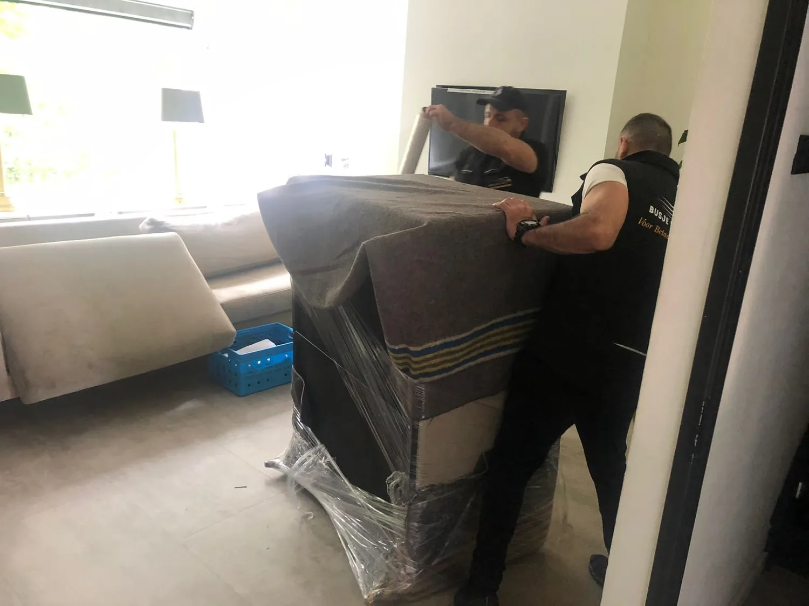

Praktische verhuisgids
Wasmachine verhuizen: zo vervoert u hem veilig.
Een wasmachine is zwaar, bevat restwater en heeft een beweegbare trommel. Bereid het apparaat en de volledige route daarom voor voordat het tillen begint.
- Handleiding van uw model blijft leidend
- Transportbouten vóór vervoer plaatsen
- Machine rechtop en vastgezet vervoeren
Eerst voorbereiden
Begin bij het model, niet bij het tillen.
Controleer het merk en typenummer en zoek de handleiding van uw wasmachine. De plaats en het aantal transportbouten, het afvoeren van restwater en de instructies voor opnieuw aansluiten kunnen per model verschillen.
Gebruik daarom de voorgeschreven transportbeveiliging van de fabrikant. Ontbreken de originele bouten, bestel dan onderdelen die bij het exacte model horen of vraag de fabrikant om advies. Open de behuizing niet om zelf materiaal rond de trommel te plaatsen.
Wasmachine verhuizen in zes stappen
Van ontkoppelen tot opnieuw plaatsen.
Werk in deze volgorde en controleer iedere stap in de modelspecifieke handleiding.
- 01
Schakel uit en sluit water af
Haal de stekker uit het stopcontact en draai de watertoevoer dicht. Leg een handdoek en lage opvangbak klaar voordat u slangen losmaakt.
- 02
Voer achtergebleven water af
Laat toevoer- en afvoerslang leeglopen. Gebruik het filter of noodafvoerslangetje alleen zoals beschreven in de handleiding en bevestig lege slangen en het snoer.
- 03
Zet de trommel vast
Plaats de juiste transportbouten of andere voorgeschreven beveiliging. Sluit en borg losse onderdelen zonder tape rechtstreeks op kwetsbare oppervlakken te plakken.
- 04
Meet de volledige route
Controleer deuren, gangen, bochten, trappen, liftmaten, drempels en de afstand tot de laadplek. Maak obstakels vooraf vrij.
- 05
Til met voldoende mensen
Bosch adviseert minimaal twee personen. Houd rekening met gewicht, grip, trap en hulpmiddelen en probeer een wasmachine niet alleen over een trap te dragen.
- 06
Vervoer rechtop en zet vast
Houd de machine tijdens tillen, laden en rijden rechtop. Zet haar in het voertuig vast zodat ze niet kan schuiven of omvallen en plaats er geen zware spullen op.

Op de nieuwe plaats
Verwijder de transportbouten vóór gebruik.
Zet de wasmachine op een stevige, vlakke ondergrond. Verwijder de transportbeveiliging voordat u een programma start en bewaar de onderdelen voor een volgende verhuizing.
Sluit toevoer en afvoer aan volgens de handleiding, zet de machine waterpas en controleer aansluitingen op lekkage. Sommige modellen vragen om een kalibratie of andere eerste instelling.
Technisch aansluiten is niet automatisch onderdeel van een verhuisofferte. Beschrijf vooraf welke hulp u wilt bespreken en laat specialistisch elektrisch of installatiewerk uitvoeren door een geschikte vakpersoon.
Wat zet u in de aanvraag?
Geef route en apparaat samen door.
- Gewenste verhuisdatum en beide adressen
- Verdiepingen, trappen en beschikbare liften
- Afstand van voordeur tot de mogelijke laadplek
- Merk, type, gewicht en afmetingen van de wasmachine
- Andere grote, zware of kwetsbare voorwerpen
- Welke voorbereiding of aanvullende hulp u wilt bespreken
Veelgestelde vragen
Wasmachine vervoeren zonder belangrijke stap over te slaan.
Controleer de modelhandleiding en geef afwijkende route- of tilomstandigheden vooraf door.
Kan een wasmachine zonder transportbouten worden verhuisd?
Gebruik de transportbeveiliging die de fabrikant voor uw exacte model voorschrijft. Zijn de originele bouten kwijt, bestel dan geschikte onderdelen of vraag de fabrikant om advies.
Mag een wasmachine liggend worden vervoerd?
Bosch adviseert om een wasmachine rechtop te houden tijdens het vervoeren. Controleer altijd de handleiding van uw eigen model voordat u de machine verplaatst.
Hoeveel mensen zijn nodig om een wasmachine te tillen?
Bosch adviseert minimaal twee personen. De benodigde inzet hangt daarnaast af van het gewicht, de trap, doorgangen, hulpmiddelen en de afstand tot de laadplek.
Wanneer moeten de transportbouten worden verwijderd?
Verwijder de transportbouten nadat de machine op de nieuwe plaats staat en voordat u een wasprogramma start. Bewaar ze daarna voor een volgende verhuizing.
Klaar om uw aanvraag compleet te maken?
Voeg de wasmachine toe aan uw inventaris.
Bereken het volume, beschrijf de route en vermeld gewicht en bijzonderheden voor een gerichte beoordeling.